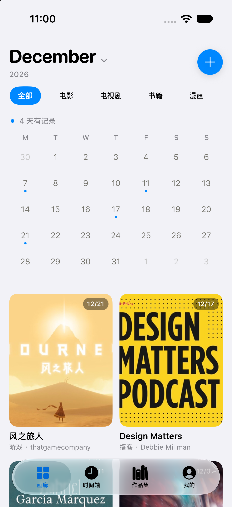
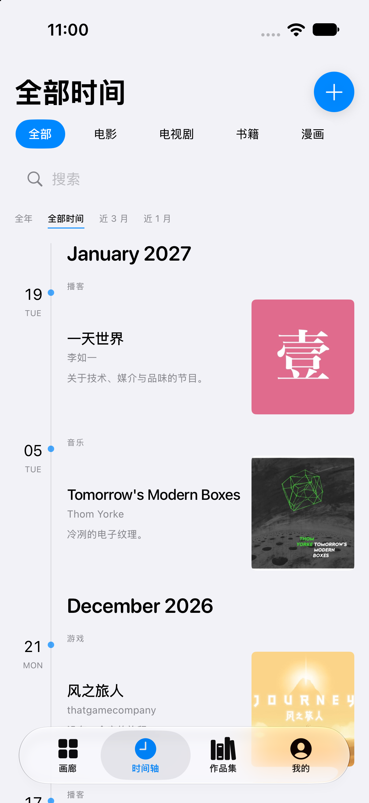
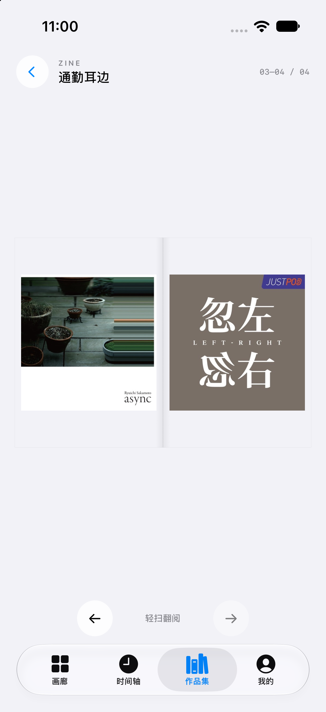
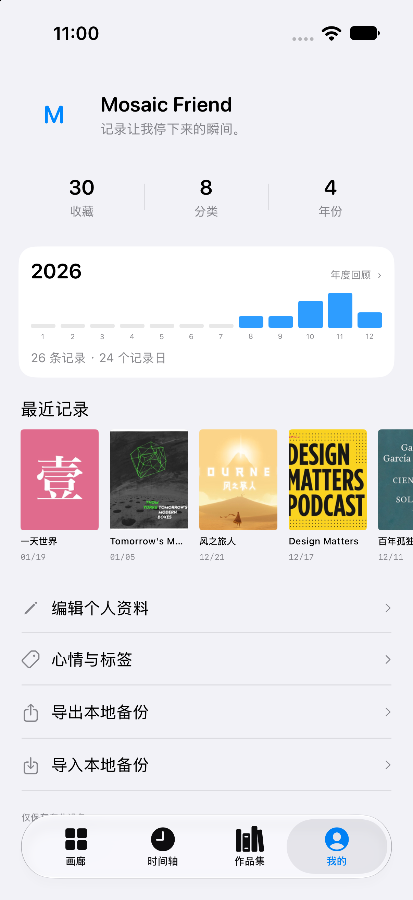
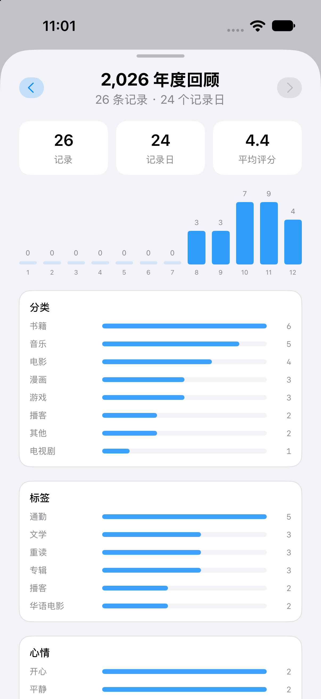
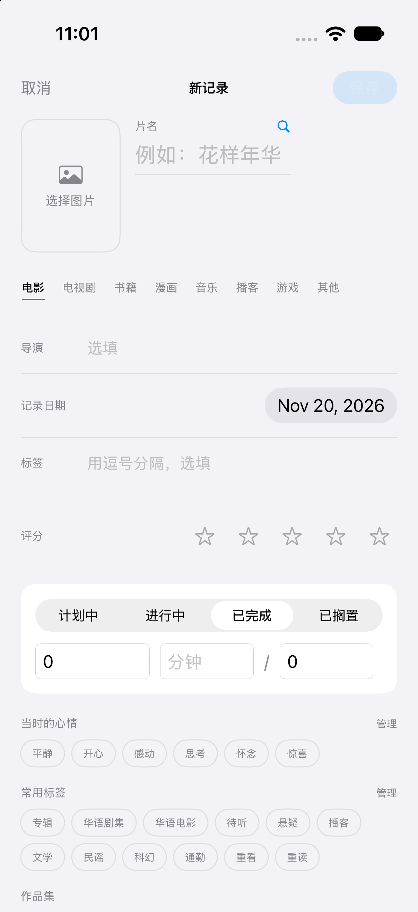
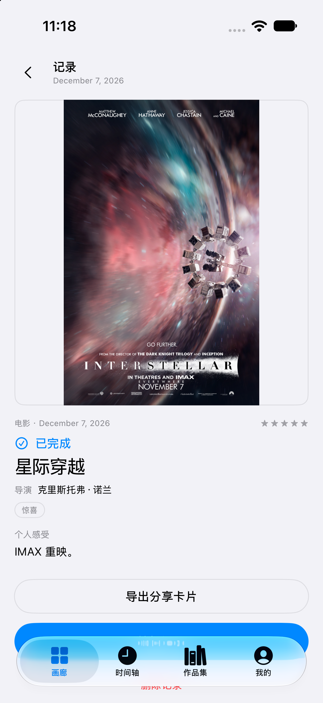
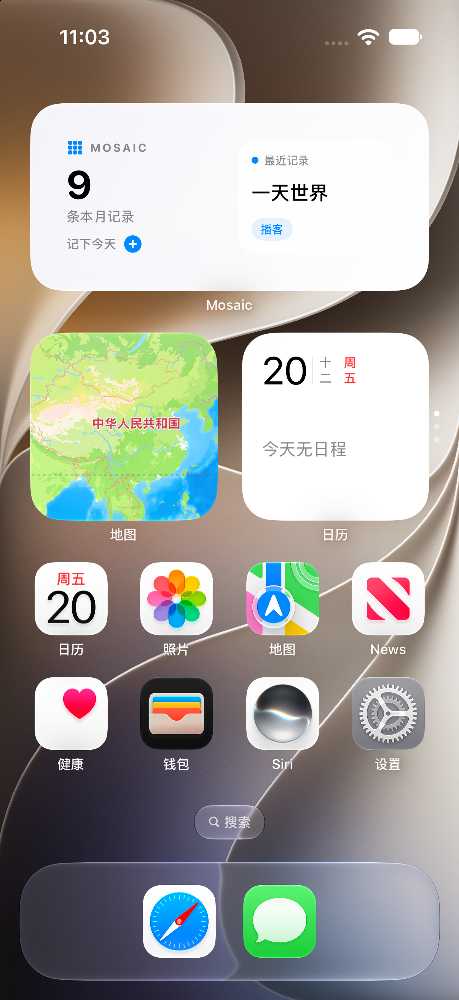

以日期组织
从日历、当天记录和时间轴进入同一份个人档案。
iOS 应用 · SwiftUI · 个人项目
把看过的、读过的、听过的，拼成一张日历。
为书影音留下一个发生的日期。封面、几句感受和当时的心情，慢慢拼成自己的生活档案。

项目概览
Mosaic 是一款本地优先的书影音记录 App。它把作品放回具体日期：日历负责回看，时间轴负责串联，作品集把有共同主题的记录收在一起。
产品理念
内容结束后，常常只剩下一个标题。Mosaic 把作品封面、记录日期和个人感受放在一起，让回忆可以按日子重新展开；一张月历，也因此成为一幅由生活片段组成的马赛克。
01 / 日历画廊
封面自然落进日期格子。点开某一天，可以继续查看当天的记录和作品详情。
02 / 时间轴
时间轴按年份和月份组织记录，并支持按分类、年份与时间范围筛选。每条记录保留作品信息和当时写下的感受。

03 / 主题作品集
为作品集命名，再以翻页方式浏览其中的记录；每一页仍能打开作品详情。



04 / 年度回顾
年度页面汇总记录数量、活跃月份、分类、标签与心情分布。回顾根据本地已有记录生成。
05 / 轻量记录
添加作品时可以选择分类、封面、日期、状态、进度、评分、心情和标签；详情页再把作品信息与个人感受放在一起。


06 / 分享卡片
记录详情可导出分享卡片，并在留白、海报、拼贴和影刊几种版式间切换。
06 / 主屏幕小组件
小组件显示本月记录数量、快速记录入口和最近收藏，让记录状态在主屏幕上也能一眼看到。

设计与交互
纸感底色、克制的分隔线和宽松留白，延续日历档案的阅读感；分类筛选贯穿画廊和时间轴，新增与编辑共用一套记录表单。
从日历、当天记录和时间轴进入同一份个人档案。
让作品图像形成可浏览的日常拼贴，而不是只看列表文字。
记录保存在设备本地，图片与条目一起管理，并支持本地备份。
技术实现